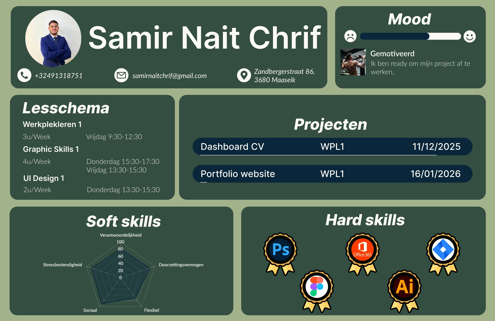

UX/UI Design • Digitale Vormgeving

Voor dit project was het doel om een dashboard te creëren dat studenten helpt hun academische voortgang, lesschema's en soft/hard skills op een visueel aantrekkelijke manier te beheren. De focus lag op een strakke hiërarchie en intuïtieve navigatie.